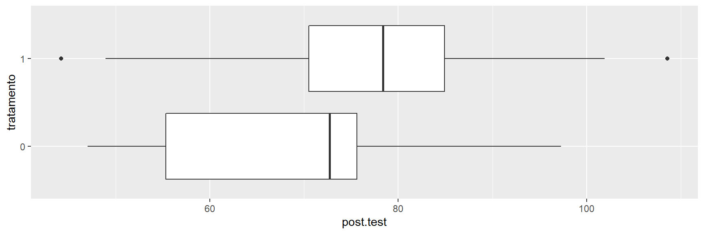
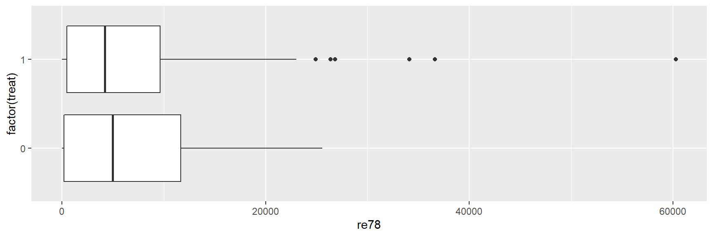
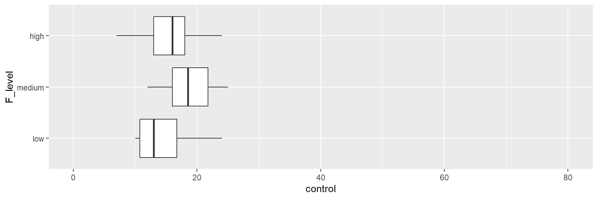
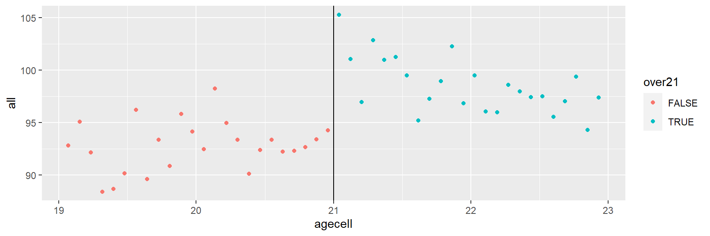
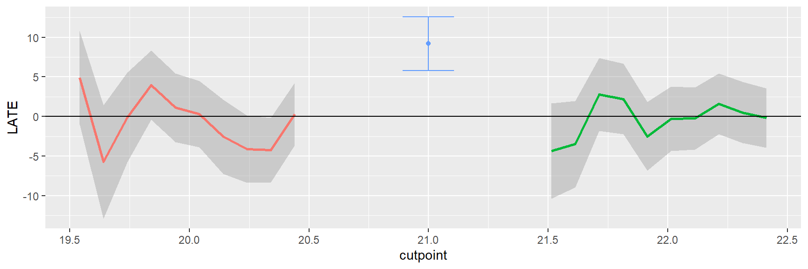
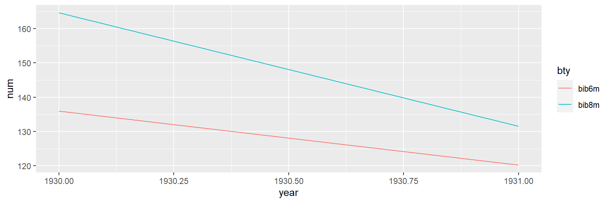

Inferência Causal na Economia
Rodrigo H. Ozon
21/09/2020
Resumo
Este tutorial busca aplicar alguns dos conceitos de inferência causal em problemas econômicos reais e simulados, utilizando o software R, demonstrando e apresentando suas enormes vantagens em relação ao data science, machine learning e até mesmo o deep learning.
Como a Economia trata de buscar respostas para problemas mais complexos (e interessantes), vamos “muito além do simples ajuste de curvas” (parafraseando o prof. Josh Angrist aqui)
Palavras-chave: Inferência Causal, Diff and Diff, Econometria
Introdução
Quero começar esse tutorial, destacando a principal diferença da Econometria para o Data Science e demais técnicas e métodos. Enfatizo muito aqui o prof. Josh Angrist:
"Eu diria que a principal diferença é a abordagem do problema da previsão.
Os cientistas de dados geralmente se preocupam com as abordagens do tipo de ajuste de curva para a previsão. Portanto, qualquer modelo que se adapte bem aos dados servirá. Se é uma experiência passada, podemos estar interessados em usá-la para extrapolar para o futuro.
Grande parte da agenda de ciência de dados está ligada aos problemas de marketing de alguém. Você está tentando descobrir quem comprará algo, quem tomará alguma ação. A econometria, na minha opinião, lida com uma classe de problemas mais difícil.
Econometristas estão mais preocupados com relacionamentos causais. Em outras palavras, se manipularmos algo, por exemplo, seguro de saúde ou política monetária, como será o mundo em resposta a essa mudança? Josh Angrist in Mastering Econometrics
Como prof. do MIT, o pesquisador Josh Angrist é muito reconhecido no meio científico, sendo muitas vezes citado pelo grande microeconomista e ex-presidente do Google, Hall Varian, p. ex. Veremos sua entrevista onde ele expõe suas contribuições:
“É somente através da econometria, a ciência de dados original, que você pode conhecer o caminho da causa ao efeito.” (Angrist, 2008)
Podemos estar interessados em questões causais e não causais:
- Descritivo como a renda varia entre as ocupações ?
- Previsão de qual será o preço do petróleo bruto no próximo ano ?
- Causa se mudarmos a proporção de alunos para professores, as pontuações de aprendizagem melhoram ?
Se estivermos interessados na resposta às questões causais, gostaríamos de usar inferência. Livros de estatística e econometria costumam variar em quão explícitos são no tratamento da causalidade. A inferência causal é de grande relevância na ev olução do programa, um domínio que, de acordo com Abadie e Cattaneo (2018, p. 466), é “Expandindo as ciências sociais, biomédicas e comportamentais que estudam o efeito de intervenções políticas. As políticas de interesse são frequentemente programas governamentais, como intervenções ativas do mercado de trabalho ou programas de combate à pobreza”.
O maravilhoso livro de Morgan e Winship (2014) Counterfactuals and Causal Inference tem a seguinte citação de Gary King na contracapa: “Tenho aprendido mais sobre inferência causal nas últimas décadas do que a soma total de tudo que tinha sido aprendido sobre isso em toda a história registrada”. Em seu livro Morgan e Winship’s fazem uso de duas abordagens para inferência causal: (1) resultados potenciais, ou contrafactuais e (2) gráficos causais. Eles argumentam que estes são complementares, e usar ambos, como fazem autores como Abadie e Catteneo (2018) p. ex.; e essa é a forma que nós veremos neste tutorial/artigo.
Gráficos causais e resultados potenciais
Para ilustrar os gráficos causais e as abordagens de resultados potenciais, consideramos um caso de alguns indivíduos que sofrem de dores nas costas. Eles podem levar um remédio para aliviar sua dor.
Denotamos dor por \(D\) e medicina por \(M\), e os indivíduos são indexados por \(i\). queremos examinar o efeito de \(D\) em \(M\). \(D\) é uma causa: queremos intervir para reduzir dor. Mas é eficaz? Podemos atribuir \(D\) aleatoriamente a diferentes indivíduos.
Usaremos o modelo causal estrutural de Pearl et al. (2016) como uma estrutura para compreender a inferência causal em relação a \(D\). O modelo causal estrutural consiste de um gráfico causal e respectivas equações estruturais que mostram nossas suposições sobre o fenômeno. Aqui, o gráfico causal é \(D\Rightarrow M\) e a equação estrutural é (assumimos linearidade para simplificar; a abordagem de Pearl não requer a suposição de linearidade) \(D=\beta_{0}+\beta_{M}M+U_{D}\).
Como M é atribuído aleatoriamente, ele é independente de \(U_D\). \(U_D\) captura as outras causas ou fontes de variação em \(D\). A equação estrutural, neste caso, tem uma linha para \(M\) e uma linha ou componente para \(U_D\). Faremos agora uma simulação. Nós assumimos que \(\beta_{0}=10\), \(\beta_{M}=-3\) e \(U_M\sim N(0,1)\)
library(tidyverse)
set.seed(22)
beta0 <- 10
betaM <- -3
num <- 400
U_D <- rnorm(num)Geramos o conjunto de dados Meds, que contém as variáveis M, D, U_D.
set.seed(3)
M <- sample(c(0,1), num, replace = T)
Indiv <- 1:num
D <- beta0 + betaM * M + U_D
Meds <- tibble(Indiv, M, U_D, D)
library(knitr)
library(kableExtra)
kbl(cbind(round(head(Meds),2))) %>%
kable_paper() %>%
scroll_box(width = "200px", height = "200px")%>%
kable_styling(bootstrap_options = c("striped", "hover", "condensed"))| Indiv | M | U_D | D |
|---|---|---|---|
| 1 | 0 | -0.51 | 9.49 |
| 2 | 1 | 2.49 | 9.49 |
| 3 | 1 | 1.01 | 8.01 |
| 4 | 0 | 0.29 | 10.29 |
| 5 | 1 | -0.21 | 6.79 |
| 6 | 1 | 1.86 | 8.86 |
\(M\rightarrow D\)
\(P=\beta_0+\beta_1M+U_D\)
Vemos nos dados gerados que o indivíduo 1 é atribuído a M = 0, ou seja, está no grupo de controle. Observamos que o valor de D para pessoa um, quando atribuído M = 0 é 9,49. No caso do indivíduo 2, o valor de D para a pessoa dois, quando atribuído M = 1 é 9,49.
Denotamos o resultado potencial para um indivíduo neste caso por \(D_{i}(m)\) onde \(i\) indexa o indivíduo em é 0 ou 1, dependendo do valor atribuído de M.
A Figura a seguir mostra como o gráfico causal estrutural está relacionado aos resultados potenciais.
Aqui, \(D_{1} (0) = 9,49\,\, e\,\, D_{2} (1) = 9,49\). O efeito causal para um indivíduo é: \(D_{i}(1) - D_{i}(0)\).
Infelizmente, e isso é chamado de dilema fundamental da inferência causal, nós não observamos ambos os resultados potenciais para um indivíduo. Portanto, não observamos neste caso o valor da dor para a pessoa 1 se caso ela tivesse recebido o medicamento, e a pessoa 2 com dor teria experimentado se ela não tivesse recebido o medicamento. Não observamos o contrafactual.
Temos que nos contentar com um efeito de tratamento médio, a diferença entre a dor vivenciada pelo grupo de controle e pelo grupo de tratamento, que estimamos a seguir. Rodamos uma regressão de D em M: \(D = r_0 + r_{1}M + e\), sendo a equação de regressão.
A equação de regressão é diferente da equação estrutural. Neste caso, \(r_1\) irá dar-nos uma estimativa próxima do valor verdadeiro, ou do parâmetro estrutural, \(\beta_{M}\); isto não é necessariamente o caso de um coeficiente de regressão nos dar uma boa estimativa do efeito causal.
modd <- lm(D ~ M, data = Meds)
summary(modd)
Call:
lm(formula = D ~ M, data = Meds)
Residuals:
Min 1Q Median 3Q Max
-3.5576 -0.6693 -0.0477 0.6869 3.3169
Coefficients:
Estimate Std. Error t value Pr(>|t|)
(Intercept) 9.99212 0.07108 140.58 <2e-16 ***
M -3.10158 0.09978 -31.09 <2e-16 ***
---
Signif. codes: 0 '***' 0.001 '**' 0.01 '*' 0.05 '.' 0.1 ' ' 1
Residual standard error: 0.9976 on 398 degrees of freedom
Multiple R-squared: 0.7083, Adjusted R-squared: 0.7075
F-statistic: 966.3 on 1 and 398 DF, p-value: < 2.2e-16\[ M|m\rightarrow D(m) \] Contrafatuais e resultados potenciais. Quando o valor de M é definido como m, D tem um potencial resultado denotado por D(m)
O coeficiente estimado (−3,1) está próximo do valor de \(\beta M (−3)\)
Atribuição aleatória de tratamento (gráficos causais)
Na ausência de atribuição aleatória de tratamento, o nível de medicamento e dor pode ser influenciado por uma variável de confusão. Tentativas de atribuição aleatória de garantir que os grupos de tratamento e controle diferem apenas no que diz respeito ao tratamento, tanto no que diz respeito às variáveis observadas como não observadas.
Uma vez que R faz a atribuição aleatória determina o valor de M, ou M é definido por R, o link entre C e M está quebrado. C não atua mais como um fator de confusão.

Na ausência de atribuição aleatória de M, uma variável C pode ser uma causa comum de M e D, e será uma variável de confusão.

Uma vez que R (atribuição aleatória) determina o valor de M, ou M é definido por R, o link entre C e M está quebrado. C não atua mais como um fator de confusão
Tabela 1: Resultados potenciais do paciente no exemplo médico perfeito de Rubin
| \(Y_{Do1}\) | \(Y_{Do0}\) | \(Eff\) | |
|---|---|---|---|
| 1 | 14.00 | 13.00 | 1.00 |
| 2 | 0.00 | 6.00 | -6.00 |
| 3 | 1.00 | 4.00 | -3.00 |
| 4 | 2.00 | 5.00 | -3.00 |
| 5 | 3.00 | 6.00 | -3.00 |
| 6 | 1.00 | 6.00 | -5.00 |
| 7 | 10.00 | 8.00 | 2.00 |
| 8 | 9.00 | 8.00 | 1.00 |
Atribuição aleatória de tratamento (resultados potenciais)
Consideramos um exemplo intrigante fornecido por Rubin (2008). Um tratamento, uma cirurgia, que afeta os anos vividos. Deixe Y(0) denotar o resultado potencial sem cirurgia, e Y(1) denotar o resultado potencial com a cirurgia. Para codificação no software R, usamos Y_Do0, e Y_Do1, respectivamente.
Nós inserimos os dados.
Y_Do0 <- c(13,6,4,5,6,6,8,8)
Y_Do0 13 6 4 5 6 6 8 8Y_Do1 <- c(14,0,1,2,3,1,10,9)
Y_Do1 14 0 1 2 3 1 10 9Eff <- Y_Do1 - Y_Do0Então criamos um dataframe:
surg <- data.frame(Y_Do1, Y_Do0, Eff)Imprimimos os dados para o exemplo médico perfeito (tabela 1 acima)
library(knitr)
library(kableExtra)
kbl(cbind(surg)) %>%
kable_paper() %>%
scroll_box(width = "200px", height = "200px")%>%
kable_styling(bootstrap_options = c("striped", "hover", "condensed"))| Y_Do1 | Y_Do0 | Eff |
|---|---|---|
| 14 | 13 | 1 |
| 0 | 6 | -6 |
| 1 | 4 | -3 |
| 2 | 5 | -3 |
| 3 | 6 | -3 |
| 1 | 6 | -5 |
| 10 | 8 | 2 |
| 9 | 8 | 1 |
Neste exemplo, os efeitos variam muito entre as 8 pessoas que são candidatas para cirurgia.
Tabela 2: Médias
| Variável | Média | |||
|---|---|---|---|---|
| 1 | Eff | -2 | ||
| 2 | Y_Do0 | 7 | ||
| 3 | Y_Do1 | 5 |
Tabela 3: Atribuição de tratamento e resultados observados
| D | Yi | |
|---|---|---|
| 1 | 1.00 | 14.00 |
| 2 | 1.00 | 0.00 |
| 3 | 1.00 | 1.00 |
| 4 | 1.00 | 2.00 |
| 5 | 0.00 | 6.00 |
| 6 | 0.00 | 6.00 |
| 7 | 0.00 | 8.00 |
| 8 | 0.00 | 8.00 |
O verdadeiro efeito causal médio é -2 (Tabela 2). Observe que não podemos observar ambos os resultados potenciais.
Denotando tratamento por Di, observaremos Yi(0) para a \(i-\)ésima pessoa se Di = 0, e da mesma forma para Yi(1). Se denotarmos Y observado para a iª pessoa por Yi, temos
\[ Yi=Di\times Yi(1) + (1-Di)\times Yi(0) \]
Considere a seguinte atribuição de tratamento:
D <- c(rep(1,4), rep(0,4))Os Ys observados com esta atribuição de tratamento são (Tabela 3):
Yi <- D*Y_Do1 + (1-D)*Y_Do0
surg_D <- data.frame(D,Yi)
kbl(cbind(surg_D)) %>%
kable_paper() %>%
scroll_box(width = "200px", height = "200px")%>%
kable_styling(bootstrap_options = c("striped", "hover", "condensed"))| D | Yi |
|---|---|
| 1 | 14 |
| 1 | 0 |
| 1 | 1 |
| 1 | 2 |
| 0 | 6 |
| 0 | 6 |
| 0 | 8 |
| 0 | 8 |
# Atribuição de tratamento e resultados observadosEstimamos a diferença de médias entre os grupos de tratamento e controle:
lm(Yi ~ D)
Call:
lm(formula = Yi ~ D)
Coefficients:
(Intercept) D
7.00 -2.75 Vemos que com esta atribuição de tratamento particular D, o efeito de tratamento médio é -2,75.
Podemos randomizar a atribuição com:
sample(D, replace = FALSE) 0 0 0 1 0 1 1 1Atribuicao <- sample(D, replace = FALSE)
Atribuicao 1 0 1 0 0 0 1 1Então, o que acontecerá se randomizarmos a atribuição? Nós olhamos para a distribuição de amostragem do efeito estimado usando um loop.
iter <- 70
efeito.medio <- numeric(iter)
for(i in 1: iter) {
Atribuicao <- sample(D, replace = FALSE)
Resultado <- Atribuicao*Y_Do1 + (1 - Atribuicao)*Y_Do0
mod_r <- lm(Resultado ~ Atribuicao)
efeito.medio[i] <- mod_r$coeff[2]
}
round(mean(efeito.medio),2) -1.91A média dos diferentes efeitos estimados está próxima do verdadeiro efeito médio (-2). Traçaremos a distribuição da amostra.
pdoc <- data.frame(efeito.medio)
ggplot(pdoc, aes(y = efeito.medio)) +
geom_boxplot() +
coord_flip()O boxplot acima mostra a distribuição amostral dos efeitos estimados; o histograma abaixo mostra que a distribuição tem lacunas (gaps) e vários picos.
ggplot(pdoc, aes(x = efeito.medio)) +
geom_histogram(fill = "grey50") +
geom_vline(xintercept = quantile(efeito.medio, probs = c(0.25,0.5,0.75)),
linetype = "dashed")## `stat_bin()` using `bins = 30`. Pick better value with `binwidth`.Exercício sugerido
Um médico perfeito, ou um médico com conhecimento perfeito dos resultados potenciais, atribuiria a cirurgia apenas aos pacientes que se beneficiarão com isso. (Claro, se o médico tivesse um conhecimento tão perfeito, não precisaríamos estudar os efeitos da cirurgia nas pessoas.) Qual será o efeito médio da cirurgia se o médico perfeito designar cirurgia ?
Ajuste covariante
Quais co-variáveis ajustar? Os gráficos causais são chamados de gráficos acíclicos direcionados (DAGS).
De acordo com Elwert (2013, p. 246), “DAGS são representações visuais de suposições causais.” … DAGS são ferramentas rigorosas com regras formais para derivar provas matemáticas. E ainda, em muitas situações, o uso de DAGs na prática requer apenas treinamento formal modesto e algum treinamento elementar de probabilidade. DAGs são portanto, extremamente eficazes para apresentar lições duramente conquistadas de metodologia de pesquisa moderna em uma linguagem compreensível para pesquisadores aplicados. “Os gráficos causais são particularmente úteis para esclarecer questões de ajuste covariante”. Se \(x\) causa \(y\) e uma terceira variável está presente, devemos ajustar para a terceira variável em uma regressão de \(y\) em \(x\)? Usamos simulação para responder à pergunta e considerar três casos:
- \(y1\) ← causa comum → \(x1\). Aqui, a causa comum variável causa tanto \(y1\) e \(x1\).
- \(y2\) ← intermediário ← \(x2\). Aqui \(x2\) causa \(y2\) por meio do intermediário variável.
- \(y3\) → colisor ← \(x3\). Aqui, \(x3\) e \(y3\) causam o colisor.
Alguns exemplos de possível causa comum, variáveis intermediárias e de colisor são:
- Causa comum. Mais assassinatos ← Hora → Mais antibióticos.
- Intermediário. Doença cardíaca ← Colesterol ← Comer comida de baixa qualidade nutricional ou superprocessada.
- Colisor. Bateria descarregada → carro não liga ← Sem gasolina.
Nós podemos até acreditar nesses mecanismos, eles podem ou não ser verdadeiros. Agora nos voltamos para a simulação, começando com o cenário de causa comum: \(y1\) ← causa.comum → \(x1\).
causa.comum <- runif(100, min = 10, max = 20)
x1 <- 2 * causa.comum + rnorm(100,0,0.5)
y1 <- 2 * causa.comum + rnorm(100,0,0.5)Regredimos (1) y1 em x1 e (2) y1 em x1 e a causa comum.
m1 <- lm(y1 ~ x1)
m2 <- lm(y1 ~ x1 + causa.comum)Os resultados são:
Tabela 4: Causa comum (o efeito verdadeiro de x1 em y1 é 1)
| Dependent variable: | ||
| y1 | ||
| m1 | m2 | |
| (1) | (2) | |
| Constant | -0.265 | -0.386 |
| (0.354) | (0.261) | |
| x1 | 1.005*** | 0.055 |
| (0.012) | (0.104) | |
| causa.comum | 1.916*** | |
| (0.209) | ||
| Observations | 100 | 100 |
| R2 | 0.986 | 0.993 |
| Adjusted R2 | 0.986 | 0.993 |
| Residual Std. Error | 0.653 (df = 98) | 0.480 (df = 97) |
| F Statistic | 7,067.465*** (df = 1; 98) | 6,575.653*** (df = 2; 97) |
| Note: | p<0.1; p<0.05; p<0.01 | |
Geramos dados para o cenário de variável intermediária: \(y2\) ← inter ← \(x2\)
x2 <- runif(100,min=10,max=20)
inter <- 2 * x2 + rnorm(100,0,0.5)
y2 <- 2 * inter + rnorm(100,0,0.5)
inter1 <- lm(y2 ~ x2)
inter2 <- lm(y2 ~ x2 + inter)Tabela 5: Variável intermediária (o verdadeiro efeito de \(x2\) em \(y2\) é 4)
| Dependent variable: | ||
| y2 | ||
| inter1 | inter2 | |
| (1) | (2) | |
| Constant | -0.638 | 0.027 |
| (0.523) | (0.266) | |
| x2 | 4.062*** | 0.338 |
| (0.034) | (0.219) | |
| inter | 1.832*** | |
| (0.107) | ||
| Observations | 100 | 100 |
| R2 | 0.993 | 0.998 |
| Adjusted R2 | 0.993 | 0.998 |
| Residual Std. Error | 0.999 (df = 98) | 0.502 (df = 97) |
| F Statistic | 13,998.850*** (df = 1; 98) | 27,913.830*** (df = 2; 97) |
| Note: | p<0.1; p<0.05; p<0.01 | |
Nesse cenário, não devemos criar controle para a variável intermediária (Tabela 5).
Exercício proposto
Depois de gerar \(y2\), \(x2\) e inter com o código acima, regredida \(y2\) em \(x2\), e \(y2\) em \(x2\) e inter. O que você observa ?
Voltemo-nos agora para o cenário colisor
\(y\) → colisor ← \(x\)
x3 <- rnorm(100)
y3 <- rnorm(100)
colisor <- 4 * y3 + 4 * x3 + 0.3 * rnorm(100)\(y\) → colisor ← \(x\)
m5 <- lm(y3 ~ x3)
m6 <- lm(y3 ~ x3 + colisor)Tabela 6: Colisor (o verdadeiro efeito de \(x3\) em \(y3\) é 0)
| Dependent variable: | ||
| y3 | ||
| m5 | m6 | |
| (1) | (2) | |
| Constant | 0.012 | -0.002 |
| (0.099) | (0.007) | |
| x3 | 0.100 | -1.003*** |
| (0.114) | (0.012) | |
| colisor | 0.248*** | |
| (0.002) | ||
| Observations | 100 | 100 |
| R2 | 0.008 | 0.995 |
| Adjusted R2 | -0.002 | 0.994 |
| Residual Std. Error | 0.990 (df = 98) | 0.073 (df = 97) |
| F Statistic | 0.766 (df = 1; 98) | 8,924.749*** (df = 2; 97) |
| Note: | p<0.1; p<0.05; p<0.01 | |
No caso do colisor, não devemos criar controle para o colisor (Tabela 6).
Vemos que ‘controlar’ nem sempre é bom.
Bom controle É bom controlar a causa comum.
Controle ruim O controle das variáveis intermediárias e do colisor é ruim.
Autores como Gelman e Hill (2007) enfatizam que não devemos controlar as variáveis de pós-tratamento. Aqui, mostramos que devemos controlar apenas as variáveis que afetam \(x\), e não aquelas afetadas por \(x\). No caso de uma variável intermediária, nós podemos obter o efeito de \(y\) no interior e no interior de \(x\), e a partir deles obter o efeito de \(y\) em \(x\). Em certas situações, esta pode ser uma estratégia útil.
Seleção de regressores por significância estatística
Esta seção procura iluminar o seguinte argumento de Freedman (1983, p. 152):
“Quando as equações de regressão são usadas no trabalho empírico, a proporção de pontos de dados para parâmetros é frequentemente baixo; além disso, variáveis com pequenos coeficientes são frequentemente descartadas e as equações reestimadas sem eles. … Tais práticas podem distorcer os níveis de significância convencionais dos testes estatísticos. A existência desse efeito é bem conhecida, mas sua magnitude pode vir como um surpresa, mesmo para um estatístico experiente.”
Iremos gerar uma variável aleatória \(y\) e 10 regressores, nenhum dos quais são causalmente relacionado com \(y\).
set.seed(80)
x1 <- rnorm(30)
x2 <- rnorm(30)
x3 <- rnorm(30)
x4 <- rnorm(30)
x5 <- rnorm(30)
x6 <- rnorm(30)
x7 <- rnorm(30)
x8 <- rnorm(30)
x9 <- rnorm(30)
x10 <- rnorm(30)
y <- rnorm(30)
mod1 <- lm(y ~ x1 + x2 + x3 + x4 + x5 + x6 + x7 + x8 + x9 + x10)
mod2 <- lm(y ~ x2 + x10)Tabela 7: Seleção pela significância estatística
| Dependent variable: | ||
| y | ||
| mod1 | mod2 | |
| (1) | (2) | |
| Constant | 0.076 | 0.024 |
| (0.167) | (0.144) | |
| x1 | 0.087 | |
| (0.215) | ||
| x2 | 0.276 | 0.222 |
| (0.189) | (0.145) | |
| x3 | 0.063 | |
| (0.147) | ||
| x4 | 0.088 | |
| (0.167) | ||
| x5 | 0.022 | |
| (0.155) | ||
| x6 | 0.189 | |
| (0.177) | ||
| x7 | 0.193 | |
| (0.211) | ||
| x8 | 0.130 | |
| (0.223) | ||
| x9 | -0.099 | |
| (0.218) | ||
| x10 | -0.364** | -0.365*** |
| (0.133) | (0.114) | |
| Observations | 30 | 30 |
| R2 | 0.440 | 0.325 |
| Adjusted R2 | 0.146 | 0.275 |
| Residual Std. Error | 0.829 (df = 19) | 0.764 (df = 27) |
| F Statistic | 1.495 (df = 10; 19) | 6.501*** (df = 2; 27) |
| Note: | p<0.1; p<0.05; p<0.01 | |
Embora \(y\) não esteja relacionado a nenhuma variável \(x\), no Modelo 2 da Tabela 7, obtemos um alta significância estatística para o coeficiente de x10.
Com base no Modelo 1 da Tabela 7, selecionamos os regressores x2 e x10:
Embora \(y\) não esteja relacionado a nenhuma variável \(x\), no Modelo 2 da Tabela 7, obtemos um alta significância estatística para o coeficiente de x10.
Exercício proposto
Gere seus dados como acima, alterando o valor dentro set.seed() a 999. Execute uma regressão de \(y\) nas 10 variáveis \(x\). Selecione os três \(xs\) mais estatisticamente significativos e execute uma segunda regressão. O que você observa?
Exemplo: Mulheres como policymakers
Duflo e Chattopadhyay (2004) estudaram o efeito de reservar posições de liderança em Conselhos de Aldeia na Índia sobre os tipos de projetos realizados por eles. Um subconjunto de seus dados é apresentado em Imai (2018), isso corresponde aos dados para Birbhum distrito no estado de West Bengal. Os dados podem ser acessados da seguinte forma (remova o símbolo de hash):
library(tidyverse)
women<-read.csv(file="https://raw.githubusercontent.com/kosukeimai/qss/master/UNCERTAINTY/women.csv", head=TRUE,sep=",")
str(women)'data.frame': 322 obs. of 6 variables:
$ GP : int 1 1 2 2 3 3 4 4 5 5 ...
$ village : int 2 1 2 1 2 1 2 1 2 1 ...
$ reserved : int 1 1 1 1 0 0 0 0 0 0 ...
$ female : int 1 1 1 1 0 0 0 0 0 0 ...
$ irrigation: int 0 5 2 4 0 0 4 0 0 0 ...
$ water : int 10 0 2 31 0 0 7 12 28 0 ...Já temos os dados em nosso computador, então lemos as variáveis no conjunto de dados women de interesse para nós são:
- Identificador GP para o Gram Panchayat.
- identificador de village para cada aldeia.
- female se o GP tinha uma líder feminina ou não.
- water; número de instalações de água potável novas ou reparadas na aldeia desde que a política de reserva começou.
A reserva é feita por atribuição aleatória.
women %>%
group_by(reserved) %>%
summarize(count_res = n(),
media_female = mean(female),
media_water = mean(water))`summarise()` ungrouping output (override with `.groups` argument)# A tibble: 2 x 4
reserved count_res media_female media_water
<int> <int> <dbl> <dbl>
1 0 214 0.0748 14.7
2 1 108 1 24.0A média de water no grupo de tratamento é 24 e no de controle é 15.
ggplot(women,aes(y = water, x = factor(reserved))) +
geom_boxplot() +
coord_flip()A Figura acima mostra que algumas das aldeias tratadas tinham níveis de água muito altos, uma característica da amostra que observamos graças aos boxplots.
Os dados são agrupados, então incorporamos isso ao realizar a randomização inferência com o pacote ri2.
library(randomizr) # Para rodar a funcao declare_ra
library(ri2) # Para a funcao conduct_ri
dat <- data.frame(Y = women$water, Z = women$reserved, cluster = women$GP)
head(dat)## Y Z cluster
## 1 10 1 1
## 2 0 1 1
## 3 2 1 2
## 4 31 1 2
## 5 0 0 3
## 6 0 0 3declaracao <- with(dat, {declare_ra(clusters = cluster)} )
declaracao## Random assignment procedure: Cluster random assignment
## Number of units: 322
## Number of clusters: 161
## Number of treatment arms: 2
## The possible treatment categories are 0 and 1.
## The number of possible random assignments is approximately infinite.
## The probabilities of assignment are constant across units:
## prob_0 prob_1
## 0.5 0.5ri2_resultado <- conduct_ri(Y ~ Z, sharp_hypothesis = 0, declaration = declaracao, data = dat)
summary(ri2_resultado)## term estimate two_tailed_p_value
## 1 Z 9.252423 0.014plot(ri2_resultado, main="Distribuição de inferência randômica para reservados")Obtemos uma estimativa de 9,25 com um valor \(p\) baixo de 0,015 (figura acima).
Também usamos o pacote estimatr, e um modelo linear, e estimamos o cluster com erros padrão robustos. Os resultados do summary(mod_water_r) mostram os coeficientes e intervalos de confiança resultantes.
women$reserved <- factor(women$reserved)
library(estimatr)
mod_water_r <- lm_robust(water ~factor(reserved), clusters = GP, data = women)
summary(mod_water_r)
Call:
lm_robust(formula = water ~ factor(reserved), data = women, clusters = GP)
Standard error type: CR2
Coefficients:
Estimate Std. Error t value Pr(>|t|) CI Lower CI Upper DF
(Intercept) 14.738 1.530 9.631 3.789e-16 11.7045 17.77 106.0
factor(reserved)1 9.252 5.065 1.827 7.054e-02 -0.7891 19.29 106.4
Multiple R-squared: 0.01688 , Adjusted R-squared: 0.0138
F-statistic: 3.337 on 1 and 160 DF, p-value: 0.06961Exemplo: Programas educacionais
Vemos os dados de um experimento realizado por volta de 1970, apresentado no e-book de Gelman e Hill (2007, p. 174-181). O resultado foi a leitura das pontuações dos testes e o tratamento foi a exposição a um programa de televisão educacional.
electric <- read.table(file="https://raw.githubusercontent.com/rhozon/datasets/master/electric.dat", header = TRUE)
str(electric)'data.frame': 96 obs. of 7 variables:
$ City : chr "F" "F" "F" "F" ...
$ Grade : int 1 1 1 1 1 1 1 1 1 1 ...
$ treated.Pretest : num 13.8 16.5 18.5 8.8 15.3 15 19.4 15 11.8 16.4 ...
$ treated.Posttest: num 48.9 70.5 89.7 44.2 77.5 84.7 78.9 86.8 60.8 75.7 ...
$ control.Pretest : num 12.3 14.4 17.7 11.5 16.4 16.8 18.7 18.2 15.4 18.7 ...
$ control.Posttest: num 52.3 55 80.4 47 69.7 74.1 72.7 97.3 74.1 76.3 ...
$ Supplement. : chr "S" "R" "S" "R" ...As principais variáveis no dataset eletric são:
- Grade. Nota do aluno.
- treated.Pretest. Pontuações do pré-teste dos alunos do grupo de tratamento.
- control.Pretest. Pontuações do pré-teste dos alunos de controle.
- treated.Posttest. Pontuações pós-teste dos alunos do grupo de tratamento.
- control.Posttest. Pontuações pós-teste dos alunos de controle.
Temos que discutir os dados, precisamos combinar as variáveis de pré-teste para o grupo de controle dos alunos, da mesma forma para o pós-teste, e criar um indicador para o tratamento.
post.test <- c(electric$treated.Posttest, electric$control.Posttest)
pre.test <- c(electric$treated.Pretest, electric$control.Pretest)
grade <- rep(electric$Grade,2)
grade <- factor(grade)
rep(c(1,0),rep(3,2)) 1 1 1 0 0 0tratamento <- rep(c(1,0), rep(length(electric$treated.Posttest),2))
tratamento <- factor(tratamento)
n <- length(post.test)
elec <- tibble(post.test, pre.test,grade,tratamento)
elec# A tibble: 192 x 4
post.test pre.test grade tratamento
<dbl> <dbl> <fct> <fct>
1 48.9 13.8 1 1
2 70.5 16.5 1 1
3 89.7 18.5 1 1
4 44.2 8.8 1 1
5 77.5 15.3 1 1
6 84.7 15 1 1
7 78.9 19.4 1 1
8 86.8 15 1 1
9 60.8 11.8 1 1
10 75.7 16.4 1 1
# ... with 182 more rowsVamos focar na grade1, filtrando os dados:
library(tidyverse)
elec_1 <- elec %>%
filter(grade==1)Nós plotamos boxplots de pontuações pós-teste do grupo de tratamento versus controle:
ggplot(elec_1, aes(y = post.test, x = tratamento)) +
geom_boxplot() +
coord_flip()
Um gráfico de dispersão de pós-teste versus pré-teste funciona bem neste caso:
ggplot(elec_1, aes(x = pre.test, y = post.test, colour = tratamento)) +
geom_point() +
stat_smooth(method=lm, se = FALSE)Como este é um experimento, não precisamos controlar as pontuações do pré-teste, mas incluir as pontuações do pré-teste, que nos fornecem estimativas mais precisas.
mod1.1 <- lm(post.test ~ tratamento, data = elec_1)
mod1.2 <- lm(post.test ~ pre.test + tratamento, data= elec_1)Tabela 8: Efeito do programa nas pontuações
| Dependent variable: | ||
| post.test | ||
| mod1.1 | mod1.2 | |
| (1) | (2) | |
| Constant | 68.790*** | -11.023 |
| (3.268) | (8.786) | |
| pre.test | 5.108*** | |
| (0.550) | ||
| tratamento1 | 8.300* | 8.787*** |
| (4.622) | (2.612) | |
| Observations | 42 | 42 |
| R2 | 0.075 | 0.712 |
| Adjusted R2 | 0.051 | 0.697 |
| Residual Std. Error | 14.978 (df = 40) | 8.461 (df = 39) |
| F Statistic | 3.224* (df = 1; 40) | 48.219*** (df = 2; 39) |
| Note: | p<0.1; p<0.05; p<0.01 | |
Exercício proposto
Analise os dados para as grades 2 e 4. Como os resultados podem se comparar com aqueles do grau 1?
Exemplo: Star
O projeto Star foi um grande experimento conduzido no Tennessee, nos Estados Unidos. Três tratamentos foram atribuídos em nível de sala de aula: turmas pequenas (13-17 alunos), classes regulares (22-25 alunos) e aulas regulares com um auxiliar que trabalharia com a professora. A análise aqui segue a apresentação na econometria do clássico livro de Hill et al. (2018), e se concentra no tratamento de pequenas classes em comparação com o grupo de controle de classes de tamanho regular.
library(tidyverse)
#library(POE5Rdata)
#data(star)
#star<-load(file="https://github.com/ccolonescu/POE5Rdata/blob/master/data/star.rda?raw=true")
load("C:/Users/rodri/Downloads/star.rda")
str(star)'data.frame': 5786 obs. of 19 variables:
$ id : int 10133 10246 10263 10266 10275 10281 10282 10285 10286 10287 ...
$ schid : int 169280 218562 205492 257899 161176 189382 189382 201449 230612 128068 ...
$ tchid : int 16928003 21856202 20549204 25789904 16117602 18938204 18938203 20144901 23061203 12806803 ...
$ tchexper : int 7 8 3 12 2 7 14 4 6 11 ...
$ absent : int 5 28 2 10 3 2 7 8 2 17 ...
$ readscore : int 427 450 483 456 411 443 448 463 472 428 ...
$ mathscore : int 478 494 513 513 468 473 449 520 536 484 ...
$ totalscore : int 905 944 996 969 879 916 897 983 1008 912 ...
$ boy : int 1 0 0 1 1 1 1 0 1 1 ...
$ white_asian: int 0 1 0 1 1 1 1 1 1 1 ...
$ black : int 1 0 1 0 0 0 0 0 0 0 ...
$ tchwhite : int 1 1 1 1 1 1 1 1 1 1 ...
$ tchmasters : int 0 1 0 1 0 1 1 1 1 0 ...
$ freelunch : int 0 0 1 0 0 0 1 1 0 0 ...
$ schurban : int 0 1 0 0 0 0 0 0 0 0 ...
$ schrural : int 0 0 0 1 1 0 0 1 1 1 ...
$ small : int 0 0 1 0 0 1 0 1 0 0 ...
$ regular : int 0 0 0 1 0 0 0 0 1 0 ...
$ aide : int 1 1 0 0 1 0 1 0 0 1 ...As principais variáveis no dataset star são:
- totalscore. Leitura mais pontuação em matemática.
- small.. É 1 se o aluno foi designado para uma classe pequena.
- boy, white-asian, freelunch. Descritores do aluno.
- tchexper. Experiência do professor.
Um dos tratamentos foi usar um auxiliar de ensino; nós ignoramos essas observações e focamos na comparação pequena versus regular.
star <- star %>%
filter(aide == 0) %>%
dplyr::select(totalscore, small, tchexper, boy, freelunch, white_asian, schid) %>%
mutate(small_fac = ifelse(small == 1, "small", "regular"), sch_fac = factor(schid))
str(star)'data.frame': 3743 obs. of 9 variables:
$ totalscore : int 996 969 916 983 1008 862 900 934 857 1043 ...
$ small : int 1 0 1 1 0 0 1 0 0 1 ...
$ tchexper : int 3 12 7 4 6 12 6 10 18 7 ...
$ boy : int 0 1 1 0 1 1 0 0 1 1 ...
$ freelunch : int 1 0 0 1 0 0 1 0 0 0 ...
$ white_asian: int 0 1 1 1 1 0 1 1 1 1 ...
$ schid : int 205492 257899 189382 201449 230612 169219 161176 168211 244831 189382 ...
$ small_fac : chr "small" "regular" "small" "small" ...
$ sch_fac : Factor w/ 79 levels "112038","123056",..: 37 74 25 30 49 16 8 14 70 25 ...star <- as_tibble(star)star %>%
group_by(small_fac) %>%
summarize(mscore = mean(totalscore),
sdscore = sd(totalscore))`summarise()` ungrouping output (override with `.groups` argument)# A tibble: 2 x 3
small_fac mscore sdscore
<chr> <dbl> <dbl>
1 regular 918. 73.1
2 small 932. 76.4A pontuação média da turma regular foi 918, e da turma pequena foi 932.
ggplot(star, aes(x = small_fac, y = totalscore)) +
geom_boxplot() +
coord_flip()+
ggtitle("Boxplots de pontuação total para small e regular classes")Na figura acima, vemos que a distribuição da pontuação total muda para a direita para o grupo de alunos em turmas pequenas. Também vemos que, em nossa amostra, os valores discrepantes mais baixos não estão lá nas classes pequenas, que notamos graças aos boxplots.
Podemos ver como as diferentes covariáveis variam entre as classes regulares e pequenas.
star %>%
group_by(small_fac) %>%
summarize(mboy = mean(boy),
mlunch = mean(freelunch),
mw_a = mean(white_asian),
mexper = mean(tchexper))# A tibble: 2 x 5
small_fac mboy mlunch mw_a mexper
<chr> <dbl> <dbl> <dbl> <dbl>
1 regular 0.513 0.474 0.681 9.07
2 small 0.515 0.472 0.685 9.00As diferenças nas médias covariáveis entre os grupos tratamento e de controle são pequenas. O pacote cobalt (Greifer 2019) nos ajuda a avaliar o equilíbrio covariável
library(cobalt)
love.plot(small ~ boy + freelunch + white_asian + tchexper, data = star, stars = "std")Podemos realizar um teste formal de equilíbrio da seguinte forma, usando um modelo de probabilidade linear (Hill et al. 2018).
mod_star_check <- lm(small ~ boy + white_asian + tchexper + freelunch, data = star)
mod_star_1 <- lm(totalscore ~ small_fac, data = star)
mod_star_2 <- lm(totalscore ~ small_fac + boy + freelunch + white_asian, data = star)
mod_star_3 <- lm(totalscore ~ small_fac + boy + freelunch + white_asian + tchexper, data = star)Tabela 9: Checando o balanço
| Dependent variable: | |
| small | |
| mod | |
| Constant | 0.466*** |
| (0.025) | |
| boy | 0.001 |
| (0.016) | |
| white_asian | 0.004 |
| (0.020) | |
| tchexper | -0.001 |
| (0.001) | |
| freelunch | -0.001 |
| (0.018) | |
| Observations | 3,743 |
| R2 | 0.0001 |
| Adjusted R2 | -0.001 |
| Residual Std. Error | 0.499 (df = 3738) |
| F Statistic | 0.059 (df = 4; 3738) |
| Note: | p<0.1; p<0.05; p<0.01 |
O efeito de pequenas classes (cerca de 14 no modelo 1 e modelo 2 na Tabela 9) é estável nas três especificações. No modelo 3, obtemos uma estimativa maior e com mais precisão.
summary(mod_star_1)
Call:
lm(formula = totalscore ~ small_fac, data = star)
Residuals:
Min 1Q Median 3Q Max
-283.04 -52.94 -6.94 44.96 321.06
Coefficients:
Estimate Std. Error t value Pr(>|t|)
(Intercept) 918.043 1.667 550.664 < 2e-16 ***
small_facsmall 13.899 2.447 5.681 1.44e-08 ***
---
Signif. codes: 0 '***' 0.001 '**' 0.01 '*' 0.05 '.' 0.1 ' ' 1
Residual standard error: 74.65 on 3741 degrees of freedom
Multiple R-squared: 0.008553, Adjusted R-squared: 0.008288
F-statistic: 32.27 on 1 and 3741 DF, p-value: 1.441e-08summary(mod_star_2)
Call:
lm(formula = totalscore ~ small_fac + boy + freelunch + white_asian,
data = star)
Residuals:
Min 1Q Median 3Q Max
-261.453 -50.276 -7.276 43.613 308.546
Coefficients:
Estimate Std. Error t value Pr(>|t|)
(Intercept) 933.694 3.315 281.676 < 2e-16 ***
small_facsmall 13.815 2.341 5.901 3.94e-09 ***
boy -15.637 2.337 -6.690 2.56e-11 ***
freelunch -34.187 2.602 -13.141 < 2e-16 ***
white_asian 12.582 2.792 4.507 6.79e-06 ***
---
Signif. codes: 0 '***' 0.001 '**' 0.01 '*' 0.05 '.' 0.1 ' ' 1
Residual standard error: 71.43 on 3738 degrees of freedom
Multiple R-squared: 0.0929, Adjusted R-squared: 0.09192
F-statistic: 95.7 on 4 and 3738 DF, p-value: < 2.2e-16summary(mod_star_3)
Call:
lm(formula = totalscore ~ small_fac + boy + freelunch + white_asian +
tchexper, data = star)
Residuals:
Min 1Q Median 3Q Max
-257.244 -50.394 -7.404 42.987 305.371
Coefficients:
Estimate Std. Error t value Pr(>|t|)
(Intercept) 927.6196 3.7575 246.871 < 2e-16 ***
small_facsmall 13.8695 2.3379 5.932 3.25e-09 ***
boy -15.3448 2.3354 -6.571 5.70e-11 ***
freelunch -33.7879 2.6005 -12.993 < 2e-16 ***
white_asian 11.6497 2.8012 4.159 3.27e-05 ***
tchexper 0.7025 0.2057 3.416 0.000643 ***
---
Signif. codes: 0 '***' 0.001 '**' 0.01 '*' 0.05 '.' 0.1 ' ' 1
Residual standard error: 71.33 on 3737 degrees of freedom
Multiple R-squared: 0.09572, Adjusted R-squared: 0.09451
F-statistic: 79.11 on 5 and 3737 DF, p-value: < 2.2e-16Os detalhes do matching podem ser um tanto técnicos e, portanto, contamos com dados simulados para que tenhamos intuição sobre a correspondência.
Exemplo simples com dados sintéticos
A ideia básica do matching é bastante intuitiva. Vemos um pequeno exemplo simulado.
Suponha que x, uma variável binária e w, sejam as causas de y. Também w afeta y de forma não linear.
Nós geramos os dados:
library(tidyverse)
x <- c(rep(0,6),rep(1,6))
w <- c(30,18,20,10,10,17,20,18,10,10,17,3)
y <- (10 * x) + w + (0.2 * w^2) + (3 * (rnorm(12,1,1)))
wsq <- w^2
dat_mat <- data.frame(y,x,w,wsq)
dat_mat y x w wsq
1 209.71838 0 30 900
2 85.25929 0 18 324
3 104.45271 0 20 400
4 35.66945 0 10 100
5 35.02797 0 10 100
6 82.84312 0 17 289
7 112.61365 1 20 400
8 99.10631 1 18 324
9 40.88302 1 10 100
10 43.64064 1 10 100
11 88.69373 1 17 289
12 18.04402 1 3 9Observe em dat_mat que a primeira observação tem um valor de w = 30, com x = 0 e o 12º tem o valor w = 3. Essa falta de sobreposição pode ser vista no gráfico abaixo:
ggplot(dat_mat, aes(x = w, y = y,
shape = factor(x),
linetype = factor(x))) +
geom_point() +
geom_smooth(method = "lm", se = FALSE, col = "black")+
ggtitle("Gráfico de dispersão de y versus w, dados incomparáveis")## `geom_smooth()` using formula 'y ~ x'Então rodamos três regressões diferentes:
modelo1 <- lm(y ~ x + w + wsq, data = dat_mat)
modelo2 <- lm(y ~ x + w, data = dat_mat)
modelo3 <- lm(y ~ x , data = dat_mat)Tabela 10: Efeito da omissão de w e wsq (Efeito verdadeiro de x em y=10)
| Dependent variable: | |||
| y | |||
| modelo1 | modelo2 | modelo3 | |
| (1) | (2) | (3) | |
| Constant | 2.181 | -36.624** | 92.162*** |
| (2.701) | (11.858) | (21.512) | |
| x | 8.627*** | 8.118 | -24.998 |
| (1.243) | (8.120) | (30.423) | |
| w | 1.500*** | 7.359*** | |
| (0.316) | (0.603) | ||
| wsq | 0.181*** | ||
| (0.009) | |||
| Observations | 12 | 12 | 12 |
| R2 | 0.999 | 0.947 | 0.063 |
| Adjusted R2 | 0.998 | 0.935 | -0.030 |
| Residual Std. Error | 2.029 (df = 8) | 13.257 (df = 9) | 52.694 (df = 10) |
| F Statistic | 2,397.247*** (df = 3; 8) | 79.834*** (df = 2; 9) | 0.675 (df = 1; 10) |
| Note: | p<0.1; p<0.05; p<0.01 | ||
Se regredirmos y em x, w e wsq, nossa estimativa do efeito de y em x está perto da estimativa verdadeira (Tabela 10). Mesmo regredir y em x e w nos dá uma estimativa razoável. Mas a regressão simples de y em x fornece uma estimativa muito enviesada. Agora usamos correspondência exata para combinar observações para as quais x = 0 com observações para as quais x = 1 com exatamente o mesmo ws. Nós usamos o Pacote MatchIt e matchit(), com método = “exact”.
library(MatchIt)
match.1 <- matchit(x ~ w, data = dat_mat, method = "exact", replace = FALSE)
match.1
Call:
matchit(formula = x ~ w, data = dat_mat, method = "exact", replace = FALSE)
Exact Subclasses: 4
Sample sizes:
Control Treated
All 6 6
Matched 5 5
Unmatched 1 1A correspondência exata levou a 5 das observações do grupo de tratamento sendo controles correspondidas; Eu fui incomparável.
A função love.plot no pacote cobalt traça o equilíbrio da covariável antes e após o matching:
library(cobalt)
love.plot(match.1, stars = "std")Agora extraímos os dados correspondentes.
match_dat <- match.data(match.1)
match_dat y x w wsq weights subclass
2 85.25929 0 18 324 1 2
3 104.45271 0 20 400 1 1
4 35.66945 0 10 100 1 3
5 35.02797 0 10 100 1 3
6 82.84312 0 17 289 1 4
7 112.61365 1 20 400 1 1
8 99.10631 1 18 324 1 2
9 40.88302 1 10 100 1 3
10 43.64064 1 10 100 1 3
11 88.69373 1 17 289 1 4Executamos as mesmas regressões que executamos anteriormente. Com a correspondência exata, a estimativa nas especificações de regressão é a mesma:
mod_matched1 <- lm(y ~ x + w + wsq, data = match_dat)
mod_matched2 <- lm(y ~ x + w, data = match_dat)
mod_matched3 <- lm(y ~ x , data = match_dat)
summary(mod_matched1)
Call:
lm(formula = y ~ x + w + wsq, data = match_dat)
Residuals:
Min 1Q Median 3Q Max
-3.3592 -0.5689 0.3158 0.9326 2.1509
Coefficients:
Estimate Std. Error t value Pr(>|t|)
(Intercept) -13.99381 15.59647 -0.897 0.404152
x 8.33696 1.30456 6.391 0.000691 ***
w 3.81798 2.32772 1.640 0.152070
wsq 0.10459 0.08015 1.305 0.239707
---
Signif. codes: 0 '***' 0.001 '**' 0.01 '*' 0.05 '.' 0.1 ' ' 1
Residual standard error: 2.063 on 6 degrees of freedom
Multiple R-squared: 0.997, Adjusted R-squared: 0.9955
F-statistic: 661 on 3 and 6 DF, p-value: 5.999e-08summary(mod_matched2)
Call:
lm(formula = y ~ x + w, data = match_dat)
Residuals:
Min 1Q Median 3Q Max
-3.9378 -1.2714 0.7595 1.3523 1.5723
Coefficients:
Estimate Std. Error t value Pr(>|t|)
(Intercept) -34.0822 2.6309 -12.954 3.80e-06 ***
x 8.3370 1.3685 6.092 0.000495 ***
w 6.8488 0.1631 41.991 1.13e-09 ***
---
Signif. codes: 0 '***' 0.001 '**' 0.01 '*' 0.05 '.' 0.1 ' ' 1
Residual standard error: 2.164 on 7 degrees of freedom
Multiple R-squared: 0.9961, Adjusted R-squared: 0.995
F-statistic: 900.2 on 2 and 7 DF, p-value: 3.615e-09summary(mod_matched3)
Call:
lm(formula = y ~ x, data = match_dat)
Residuals:
Min 1Q Median 3Q Max
-36.10 -33.26 12.95 20.74 35.80
Coefficients:
Estimate Std. Error t value Pr(>|t|)
(Intercept) 68.651 14.395 4.769 0.00141 **
x 8.337 20.357 0.410 0.69289
---
Signif. codes: 0 '***' 0.001 '**' 0.01 '*' 0.05 '.' 0.1 ' ' 1
Residual standard error: 32.19 on 8 degrees of freedom
Multiple R-squared: 0.02053, Adjusted R-squared: -0.1019
F-statistic: 0.1677 on 1 and 8 DF, p-value: 0.6929ggplot(match_dat, aes(x = w, y = y, shape = factor(x), linetype = factor(x))) +
geom_point() +
geom_smooth(method = "lm", se = FALSE, col = "black")+
ggtitle("Gráfico de dispersão de y contra w depois de combinar")## `geom_smooth()` using formula 'y ~ x'Podemos comparar nossa figura anterior com os dados incomparáveis do gráfico inicial dessa seção. Ho et al. (2011) defendem a correspondência como um método não paramétrico para reduzir a dependência do modelo.
Exemplo: Programa de Treinamento de Mão de Obra
Lalonde (1986) mostrou que a avaliação experimental e econométrica (com dados observacionais) de um programa de treinamento de mão-de-obra - o National Supported Work Demonstração - chegou a diferentes conclusões. No entanto, Dehejia andWahba (1999) subsequentemente usado correspondência; eles mostraram que um estudo observacional poderia chegar com os resultados do estudo experimental. Trabalharemos com a versão dos dados disponíveis no pacote MatchIt.
data(lalonde, package = "MatchIt")
#l1 <- read.csv("l1.csv")
#write.csv(l1,"l1.csv")
str(lalonde)'data.frame': 614 obs. of 10 variables:
$ treat : int 1 1 1 1 1 1 1 1 1 1 ...
$ age : int 37 22 30 27 33 22 23 32 22 33 ...
$ educ : int 11 9 12 11 8 9 12 11 16 12 ...
$ black : int 1 0 1 1 1 1 1 1 1 0 ...
$ hispan : int 0 1 0 0 0 0 0 0 0 0 ...
$ married : int 1 0 0 0 0 0 0 0 0 1 ...
$ nodegree: int 1 1 0 1 1 1 0 1 0 0 ...
$ re74 : num 0 0 0 0 0 0 0 0 0 0 ...
$ re75 : num 0 0 0 0 0 0 0 0 0 0 ...
$ re78 : num 9930 3596 24909 7506 290 ...A variável de resultado são os ganhos em 1978, re78. O tratamento é treat. Existem covariáveis demográficas e ganhos anteriores em 1974 re74 e 1975 re75. Renomeamos lalonde para economizar digitação.
l1 <- lalonde
love.plot(treat ~ age + educ + black + hispan + married + nodegree + re74 + re75, data = l1, stars="std")## Note: 's.d.denom' not specified; assuming pooled.As covariáveis são desequilibradas, especialmente black e re74
mod_la1 <- lm(re78 ~ treat, data = l1)
mod_la2 <- lm(re78 ~ treat + age + educ + black + hispan + married +
nodegree + re74 + re75, data = l1)
summary(mod_la1)
Call:
lm(formula = re78 ~ treat, data = l1)
Residuals:
Min 1Q Median 3Q Max
-6984 -6349 -2048 4100 53959
Coefficients:
Estimate Std. Error t value Pr(>|t|)
(Intercept) 6984.2 360.7 19.362 <2e-16 ***
treat -635.0 657.1 -0.966 0.334
---
Signif. codes: 0 '***' 0.001 '**' 0.01 '*' 0.05 '.' 0.1 ' ' 1
Residual standard error: 7471 on 612 degrees of freedom
Multiple R-squared: 0.001524, Adjusted R-squared: -0.0001079
F-statistic: 0.9338 on 1 and 612 DF, p-value: 0.3342summary(mod_la2)
Call:
lm(formula = re78 ~ treat + age + educ + black + hispan + married +
nodegree + re74 + re75, data = l1)
Residuals:
Min 1Q Median 3Q Max
-13595 -4894 -1662 3929 54570
Coefficients:
Estimate Std. Error t value Pr(>|t|)
(Intercept) 6.651e+01 2.437e+03 0.027 0.9782
treat 1.548e+03 7.813e+02 1.982 0.0480 *
age 1.298e+01 3.249e+01 0.399 0.6897
educ 4.039e+02 1.589e+02 2.542 0.0113 *
black -1.241e+03 7.688e+02 -1.614 0.1071
hispan 4.989e+02 9.419e+02 0.530 0.5966
married 4.066e+02 6.955e+02 0.585 0.5590
nodegree 2.598e+02 8.474e+02 0.307 0.7593
re74 2.964e-01 5.827e-02 5.086 4.89e-07 ***
re75 2.315e-01 1.046e-01 2.213 0.0273 *
---
Signif. codes: 0 '***' 0.001 '**' 0.01 '*' 0.05 '.' 0.1 ' ' 1
Residual standard error: 6948 on 604 degrees of freedom
Multiple R-squared: 0.1478, Adjusted R-squared: 0.1351
F-statistic: 11.64 on 9 and 604 DF, p-value: < 2.2e-16set.seed(123)
match.l1 <- matchit(treat ~ age + educ + black + hispan + married +
nodegree + re74 + re75,
data = l1, method = "genetic",
replace = FALSE, pop.size = 50, print = 0)#, caliper = 0.4)Loading required namespace: rgenoud#print = 0)
match.l1
Call:
matchit(formula = treat ~ age + educ + black + hispan + married +
nodegree + re74 + re75, data = l1, method = "genetic", replace = FALSE,
pop.size = 50, print = 0)
Sample sizes:
Control Treated
All 429 185
Matched 185 185
Unmatched 244 0
Discarded 0 0Todas as 185 observações tratadas foram combinadas
love.plot(match.l1, stars ="std")O equilíbrio da covariada melhorou após a correspondência
match_dat <- match.data(match.l1)ggplot(l1, aes(x = factor(treat), y = re78)) +
geom_boxplot() + coord_flip()
ggplot(match_dat, aes(x = factor(treat), y = re78)) +
geom_boxplot() + coord_flip()Nos dados não combinados, a mediana e os valores do 75º percentil de re78 são maiores no grupo de controle, o oposto é verdadeiro em dados combinados. Além disso, observe os outliers nos grupos tratamento e de controle.
mod_la_match1 <- lm(re78 ~ treat, data = match_dat)
mod_la_match2 <- lm(re78 ~ treat + age + educ + black + hispan +
married + nodegree + re74 + re75, data = match_dat)
summary(mod_la_match1)##
## Call:
## lm(formula = re78 ~ treat, data = match_dat)
##
## Residuals:
## Min 1Q Median 3Q Max
## -6349 -5593 -2218 3162 53959
##
## Coefficients:
## Estimate Std. Error t value Pr(>|t|)
## (Intercept) 5593.3 532.6 10.502 <2e-16 ***
## treat 755.9 753.2 1.004 0.316
## ---
## Signif. codes: 0 '***' 0.001 '**' 0.01 '*' 0.05 '.' 0.1 ' ' 1
##
## Residual standard error: 7244 on 368 degrees of freedom
## Multiple R-squared: 0.002729, Adjusted R-squared: 1.917e-05
## F-statistic: 1.007 on 1 and 368 DF, p-value: 0.3163summary(mod_la_match2)##
## Call:
## lm(formula = re78 ~ treat + age + educ + black + hispan + married +
## nodegree + re74 + re75, data = match_dat)
##
## Residuals:
## Min 1Q Median 3Q Max
## -11887 -5009 -1646 3598 54055
##
## Coefficients:
## Estimate Std. Error t value Pr(>|t|)
## (Intercept) -1.151e+03 3.321e+03 -0.346 0.72918
## treat 1.220e+03 8.143e+02 1.499 0.13485
## age 7.891e+00 4.390e+01 0.180 0.85746
## educ 5.975e+02 2.186e+02 2.734 0.00657 **
## black -1.140e+03 9.101e+02 -1.252 0.21122
## hispan 2.782e+02 1.679e+03 0.166 0.86853
## married 9.406e+02 1.012e+03 0.930 0.35314
## nodegree 7.929e+01 1.132e+03 0.070 0.94420
## re74 3.221e-02 1.010e-01 0.319 0.75006
## re75 3.506e-01 1.618e-01 2.167 0.03089 *
## ---
## Signif. codes: 0 '***' 0.001 '**' 0.01 '*' 0.05 '.' 0.1 ' ' 1
##
## Residual standard error: 6995 on 360 degrees of freedom
## Multiple R-squared: 0.09041, Adjusted R-squared: 0.06767
## F-statistic: 3.976 on 9 and 360 DF, p-value: 7.465e-05Nos resultados gerados, vemos que com os dados correspondentes, obtemos um efeito de tratamento de 756 estimando a diferença de médias. Recebemos uma estimativa de 1220, uma vez que incluímos os grupos de controle na regressão.
Análise de Sensibilidade
Em um experimento, o tratamento é atribuído aleatoriamente. Como resultado da atribuição aleatória, unidades de tratamento e controle são balanceadas em relação às covariáveis observadas e não observadas.
Em um estudo observacional, por outro lado, o tratamento não é atribuído aleatoriamente. Combinamos para trazer equilíbrio entre as unidades de tratamento e controle com respeito às covariáveis observadas; mas covariáveis não observadas podem estar influenciando o tratamento.
Embora não possamos observar o que não é observado, podemos conduzir uma análise de sensibilidade. O seguinte parágrafo de Rosenbaum (2005, p. 1809) resume a análise de sensibilidade:
The sensitivity analysis imagines that in the population before matching or stratification, subjects are assigned to treatment or control independently with unkown probabilities. Specifically, two subjectswho look the same at baseline before treatment—that is, two subjectswith the same observed covariates—may nonetheless differ in terms of unobserved covariates, so that one subject has an odds of treatment that is up to \(\Gamma\) ≥ 1 greater than the odds for another subject. In the simplest randomized experiment, everyone has the same chance of receiving the treatment, so \(\Gamma\) = 1. If \(\Gamma\) = 2 in an observational study, one subject might be twice as likely as another to receive the treatment because of unobserved pre-treatment differences.
The sensitivity analysis asks how much hidden bias can be present—that is, how large can \(\Gamma\) be—before the qualitative conclusions of the study begin to change. A study is highly sensitive to hidden bias if the conclusions change for \(\Gamma\) just barely larger than 1, and it is insensitive if the conclusions change only for quite large values of \(\Gamma\).
O pacote rbounds (Keele 2014) baseia-se no pacote Matching para fazer a correspondência genética e, em seguida, realiza uma análise de sensibilidade. Faremos isso para o dados lalonde no pacote MatchIt que analisamos anteriormente.
Precisamos fornecer os dados ao Matching em um determinado formato. Y abaixo é para o resultado, Tr para tratamento, X para covariáveis.
library(rbounds)
Y <- l1$re78
Tr <- l1$treat #o tratamento
X <- cbind(l1$age, l1$educ, l1$black, l1$hispan, l1$married, l1$nodegree, l1$re74, l1$re75)
BalanceMat <- cbind(l1$age, I(l1$age^2), l1$educ, I(l1$educ^2), l1$black, l1$hispan, l1$married, l1$nodegree, l1$re74 , I(l1$re74^2), l1$re75, I(l1$re75^2), I(l1$re74*l1$re75), I(l1$age*l1$nodegree), I(l1$educ*l1$re74), I(l1$educ*75))A função GenMatch() realiza a correspondência genética
#Pesos geneticos
gen1 <- GenMatch(Tr=Tr, X=X, BalanceMat=BalanceMat, pop.size=50, data.type.int=FALSE, print=0, replace=FALSE)
#Match
mgen1 <- Match(Y=Y, Tr=Tr, X=X, Weight.matrix=gen1, replace=FALSE)
summary(mgen1)
Estimate... 618.4
SE......... 704.89
T-stat..... 0.8773
p.val...... 0.38032
Original number of observations.............. 614
Original number of treated obs............... 185
Matched number of observations............... 185
Matched number of observations (unweighted). 185 A diferença de estimativa de médias fornecida pelo Matching é 765, com um Erro Padrão de Abadie-Imbens Erro padrão do de 699. A função psens() fornece uma análise de sensibilidade:
se Gamma() mudar, como o valor \(p\) do Rank assinado de Wilcoxon muda? Até com Gama = 1, o valor p está bem acima de 0,05 ou 0,1. Existe uma grande sensibilidade a um possível viés oculto devido a covariáveis ausentes.
psens(mgen1, Gamma = 1.5, GammaInc = 0.1)
Rosenbaum Sensitivity Test for Wilcoxon Signed Rank P-Value
Unconfounded estimate .... 0.2475
Gamma Lower bound Upper bound
1.0 0.2475 0.2475
1.1 0.1108 0.4428
1.2 0.0430 0.6358
1.3 0.0148 0.7880
1.4 0.0046 0.8887
1.5 0.0013 0.9465
Note: Gamma is Odds of Differential Assignment To
Treatment Due to Unobserved Factors
O hlsens() fornece uma análise de sensibilidade para a estimativa de ponto Hodges-Lehmann. Com um baixo gama de 1,1, o limite inferior e o limite superior são -0,017 e 547, respectivamente.
hlsens(mgen1, Gamma = 1.5, GammaInc = 0.1)
Rosenbaum Sensitivity Test for Hodges-Lehmann Point Estimate
Unconfounded estimate .... 515.3107
Gamma Lower bound Upper bound
1.0 515.310 515.31
1.1 63.911 750.61
1.2 -211.390 1114.80
1.3 -522.990 1399.80
1.4 -762.590 1611.60
1.5 -985.390 1845.80
Note: Gamma is Odds of Differential Assignment To
Treatment Due to Unobserved Factors
Exemplo: Exposição ao chumbo
Rosenbaum (2017, p. 216) escreveu:
Matching may use technical tools to balance many observed covariates, x, but it leaves in its wake a simple structure, perhaps matched pairs, in which treated and control groups are readily seen to be comparable in terms of each measured covariate.With concerns about the measured covariates removed from the picture, our attention turns to the challenging issues that determine whether or not an observational study is convincing.
A exposição de um pai ao chumbo no trabalho afeta seus filhos? Que tipo de comparações vai lançar luz sobre isso? No exemplo apresentado em Rosenbaum (2017), o pais trabalharam em uma fábrica de baterias em Oklahoma.
Os dados estão no pacote DOS e as observações já estão combinadas.
data(lead, package = "DOS")
head(lead) control exposed level hyg both dif
1 13 14 high good high.ok 1
2 16 13 high good high.ok -3
3 11 25 high good high.ok 14
4 18 41 high mod high.ok 23
5 24 18 high mod high.ok -6
6 7 49 high mod high.ok 42Nossa primeira comparação é de crianças cujos pais trabalharam na fábrica de baterias com crianças combinadas de controle.
child_lead <- c(lead$control, lead$exposed)
treat <- c(rep("control",33), rep("exposed",33))
child_lead_dat <- data.frame(child_lead, treat)
ggplot(child_lead_dat, aes(x = treat, y = child_lead)) +
geom_boxplot() +
ylim(0,80) +
coord_flip()A Figura acima mostra que a distribuição dos níveis de chumbo é muito maior para as crianças expostas.
Nossa segunda comparação é de crianças cujos pais tiveram diferentes níveis de exposição para liderar na fábrica da bateria.
library(forcats)
llevel <- c("low", "medium", "high")
lead$F_level <- factor(lead$level, levels = llevel)ggplot(lead, aes(x = F_level, y = exposed)) +
geom_boxplot() +
ylim(0,80) + coord_flip()Crianças cujos pais tinham níveis mais altos de exposição tinham níveis mais altos de chumbo.
Nossa terceira comparação é entre as crianças do grupo de controle separadas com base na exposição do pai da criança no grupo de tratamento.
ggplot(lead, aes(x = F_level, y = control)) +
geom_boxplot() +
ylim(0,80) + coord_flip()
Finalmente pegamos crianças cujos pais tiveram alta exposição, e dentro deste grupo, comparamos as crianças com base na higiene do pai.
lead$Hyg <- ifelse(lead$hyg == "poor", "poor", "ok")
lead %>%
filter(F_level == "high") %>%
ggplot(aes(x = Hyg, y = exposed)) +
geom_boxplot() +
ylim(0,80) + coord_flip()A Figura acima mostra que as crianças cujos pais tinham higiene pior tiveram maior níveis de chumbo.
Exemplo: Compensação por Lesões
Examinamos o efeito das leis de compensação do trabalhador no tempo que um trabalhador esteve fora do trabalho após lesão/acidente de trabalho. Este estudo de Meyer, Viscusi e Durbin (1995) é discutido em Rosenbaum (2017). Em julho de 1980, o Kentucky aumentou seu benefício máximo de 131 para 217 dólares por semana. Este aumento afetou apenas os trabalhadores que eram acima do limite anterior - ganhadores de níveis mais altos.
library(wooldridge)
data(injury)
str(injury)'data.frame': 7150 obs. of 30 variables:
$ durat : num 1 1 84 4 1 1 7 2 175 60 ...
$ afchnge : int 1 1 1 1 1 1 1 1 1 1 ...
$ highearn: int 1 1 1 1 1 1 1 1 1 1 ...
$ male : int 1 1 1 1 1 1 1 1 1 1 ...
$ married : int 0 1 1 1 1 1 1 1 1 1 ...
$ hosp : int 1 0 1 1 0 0 0 1 1 1 ...
$ indust : int 3 3 3 3 3 3 3 3 3 3 ...
$ injtype : int 1 1 1 1 1 1 1 1 1 1 ...
$ age : int 26 31 37 31 23 34 35 45 41 33 ...
$ prewage : num 405 644 398 528 529 ...
$ totmed : num 1188 361 8964 1100 373 ...
$ injdes : int 1010 1404 1032 1940 1940 1425 1110 1207 1425 1010 ...
$ benefit : num 247 247 247 247 212 ...
$ ky : int 1 1 1 1 1 1 1 1 1 1 ...
$ mi : int 0 0 0 0 0 0 0 0 0 0 ...
$ ldurat : num 0 0 4.43 1.39 0 ...
$ afhigh : int 1 1 1 1 1 1 1 1 1 1 ...
$ lprewage: num 6 6.47 5.99 6.27 6.27 ...
$ lage : num 3.26 3.43 3.61 3.43 3.14 ...
$ ltotmed : num 7.08 5.89 9.1 7 5.92 ...
$ head : int 1 1 1 1 1 1 1 1 1 1 ...
$ neck : int 0 0 0 0 0 0 0 0 0 0 ...
$ upextr : int 0 0 0 0 0 0 0 0 0 0 ...
$ trunk : int 0 0 0 0 0 0 0 0 0 0 ...
$ lowback : int 0 0 0 0 0 0 0 0 0 0 ...
$ lowextr : int 0 0 0 0 0 0 0 0 0 0 ...
$ occdis : int 0 0 0 0 0 0 0 0 0 0 ...
$ manuf : int 0 0 0 0 0 0 0 0 0 0 ...
$ construc: int 0 0 0 0 0 0 0 0 0 0 ...
$ highlpre: num 6 6.47 5.99 6.27 6.27 ...
- attr(*, "time.stamp")= chr "25 Jun 2011 23:03"Removemos as observações com os missings:
injury <- injury %>%
na.omit()Subconjuntos dos ganhadores (indenizados) de níveis mais elevados que estavam em Kentucky.
# subset highearners
library(tidyverse)
library(lubridate)
inj_ky_h <- injury %>%
filter(ky == 1, highearn == 1)Subamostra dos ganhadores de níveis mais baixos
inj_ky_l <- injury %>%
filter(ky == 1, highearn == 0)A variável afchnge é uma variável dummy para observações após a mudança de política. Nós combinamos os dados.
match.ky.h <- matchit(afchnge ~ male + married + hosp + indust + injtype + age + lprewage, data = inj_ky_h, method = "genetic", replace = FALSE, pop.size = 50, print = 0)
match.ky.h
Call:
matchit(formula = afchnge ~ male + married + hosp + indust +
injtype + age + lprewage, data = inj_ky_h, method = "genetic",
replace = FALSE, pop.size = 50, print = 0)
Sample sizes:
Control Treated
All 1128 1103
Matched 1103 1103
Unmatched 25 0
Discarded 0 0Todas as 103 observações tratadas estão correspondidas.
#library(precrec)
#love.plot(match.ky.h, stars ="std")
# Erro: `data` must be a data frame, or other object coercible by `fortify()`, not an S3 object with class matchitNós comparamos o log de duração entre os grupos antes e depois dos dados grupos combinados.
#ggplot(match.ky.h, aes(y = ldurat, x = factor(afchnge))) +
#geom_boxplot() +
#coord_flip()#match_dat_ky_h %>%
#group_by(afchnge) %>%
#summarize(mean_ld = mean(ldurat), median_ld = median(ldurat))A média de ldurat antes era 1,39, depois era 1,61.
Usamos o pacote rbounds para estimar as diferenças nas médias depois e antes do grupo.
#attach(match_dat_ky_h)
#Y <- ldurat
#Tr <- afchnge
#X <- cbind(male, married, hosp, indust, injtype, age, lprewage)
#gen1 <- GenMatch(Tr = Tr, X = X, pop.size = 50, print = 0)
#mgen1 <- Match(Y = Y, Tr = Tr, X = X, Weight.matrix = gen1, replace = FALSE)
#summary(mgen1)Obtemos uma estimativa de 0,25 com um erro padrão de 0,05.
#psens(mgen1, Gamma = 1.5, GammaInc = 0.1)Em Gama = 1,3, o valor \(p\) excede 0,05 na análise de sensibilidade.
#hlsens(mgen1, Gamma = 1.5, GammaInc = 0.1)A estimativa H-L é 0,25 em Gama = 0 e o limite cruza zero em Gama = 1,3.
Rosenbaum chama as contrapartes de baixa renda; eles não são afetados pela mudança nas leis de compensação, para que possamos verificar nossos resultados para pessoas de alta renda avaliando se o tempo que os trabalhadores de baixa renda ficaram fora do trabalho aumenta ou não.
Exercício proposto
Faça uma análise semelhante para as pessoas de baixa renda (temos os dados já filtrados para os valores acima para obter inj_ky_l).
Descontinuidade na regressão
Em um projeto de descontinuidade de regressão, a atribuição de tratamento depende de um valor de corte de uma variável. Usamos esse conhecimento da atribuição de tratamento para estimar o efeito causal.
Exemplo simples com dados sintéticos
Faremos uma simulação; então criaremos alguns dados sintéticos.
library(tidyverse)
set.seed(12)
tamanho_amostra <- 1000A variável running, run, é desenhada a partir de uma distribuição uniforme.
run <- runif(tamanho_amostra, min = 10, max = 50)A variável de tratamento, treat, é igual a 0 se a execução for $<$20, caso contrário, treat = 1.
# tratamento, pontodecorte = 20
treat <- ifelse(run < 20,0,1)O resultado é dado por: outcome = 10 treat - 0,4run + ruído
# outcome
outcome <- 10 * treat - 0.4 * run + 3 * rnorm(tamanho_amostra)Criamos um dataframe com essas variáveis:
rd_data <- data.frame(treat = factor(treat), run, outcome)Então plotamos os dados
ggplot(rd_data) +
geom_point(aes(x = run, y = outcome, shape = treat), col = "grey60") + geom_smooth(aes(x = run, y = outcome, linetype = treat),
col = "black") + geom_vline(xintercept = 20)`geom_smooth()` using method = 'loess' and formula 'y ~ x'Vemos que há um salto claro no ponto de corte.
Regredir a variável de resultado no tratamento e a variável em execução nos dá estimativa próxima do efeito verdadeiro (10).
lm(outcome ~ treat + run)
Call:
lm(formula = outcome ~ treat + run)
Coefficients:
(Intercept) treat run
-0.3362 9.8786 -0.3855 Exemplo: Idade mínima legal para beber
Agora trabalhamos com o código R para analisar os dados relativos ao consumo mínimo de idade legal (MLDA) apresentado em Angrist e Pischke (2015). A MLDA de 21 afetou taxas de mortalidade nos Estados Unidos ?
# lendo os dados de exemplo do Stata
library(foreign)
#mlda=read.dta("AEJfigs.dta")
mlda<-read.dta(file="http://masteringmetrics.com/wp-content/uploads/2015/01/AEJfigs.dta")
str(mlda)'data.frame': 50 obs. of 19 variables:
$ agecell : num 19.1 19.2 19.2 19.3 19.4 ...
$ all : num 92.8 95.1 92.1 88.4 88.7 ...
$ allfitted : num 91.7 91.9 92 92.2 92.3 ...
$ internal : num 16.6 18.3 18.9 16.1 17.4 ...
$ internalfitted : num 16.7 16.9 17.1 17.3 17.4 ...
$ external : num 76.2 76.8 73.2 72.3 71.3 ...
$ externalfitted : num 75 75 75 74.9 74.9 ...
$ alcohol : num 0.639 0.677 0.866 0.867 1.019 ...
$ alcoholfitted : num 0.794 0.838 0.878 0.915 0.949 ...
$ homicide : num 16.3 16.9 15.2 16.7 14.9 ...
$ homicidefitted : num 16.3 16.3 16.3 16.3 16.3 ...
$ suicide : num 11.2 12.2 11.7 11.3 11 ...
$ suicidefitted : num 11.6 11.6 11.6 11.6 11.6 ...
$ mva : num 35.8 35.6 34.2 32.3 32.7 ...
$ mvafitted : num 34.8 34.6 34.4 34.3 34.1 ...
$ drugs : num 3.87 3.24 3.2 3.28 3.55 ...
$ drugsfitted : num 3.45 3.47 3.49 3.51 3.54 ...
$ externalother : num 8.53 8.66 8.51 8.26 8.42 ...
$ externalotherfitted: num 8.39 8.53 8.66 8.79 8.9 ...
- attr(*, "datalabel")= chr ""
- attr(*, "time.stamp")= chr " 6 Aug 2012 14:44"
- attr(*, "formats")= chr [1:19] "%9.0g" "%9.0g" "%9.0g" "%9.0g" ...
- attr(*, "types")= int [1:19] 254 254 254 254 254 254 254 254 254 254 ...
- attr(*, "val.labels")= chr [1:19] "" "" "" "" ...
- attr(*, "var.labels")= chr [1:19] "Age Cell" "All" "All Fitted" "Internal" ...
- attr(*, "version")= int 12Temos dados sobre todas as taxas de mortalidade por todas as causas e idade em meses. Criamos uma variável fictícia para maiores de 21 anos.
mlda$over21 = mlda$agecell>=21Então plotamos os dados
library(ggplot2)
age3=ggplot(mlda, aes(x = agecell, y = all,colour=over21)) +
geom_point() +
geom_vline(xintercept=21)
age3## Warning: Removed 2 rows containing missing values (geom_point).
Nós adicionamos smooth(). Independentemente do tipo, temos um efeito claro do idade mínima legal para beber.
age4=age3 + stat_smooth(method = "lm") +
stat_smooth(method = "loess")
age4## Warning: Removed 2 rows containing non-finite values (stat_smooth).
## Warning: Removed 2 rows containing non-finite values (stat_smooth).## Warning: Removed 2 rows containing missing values (geom_point).Agora usamos um dos pacotes especializados do R para descontinuidade de regressão, rddtools (Stigler e Quast 2015).
library(rddtools)Removemos dados faltantes:
mlda <- mlda %>%
na.omit()Temos que declarar os dados para regressão com descontinuidades:
rd_data_2 <- rdd_data(y = all, x=agecell, data=mlda, cutpoint=21 )
summary(rd_data_2)### rdd_data object ###
Cutpoint: 21
Type: Sharp
Sample size:
-Full : 48
-Left : 24
-Right: 24
Covariates: no Primeiro usamos uma regressão paramétrica para estimar o efeito do tratamento.
reg_para <- rdd_reg_lm(rd_data_2, order=1)
reg_para### RDD regression: parametric ###
Polynomial order: 1
Slopes: separate
Number of obs: 48 (left: 24, right: 24)
Coefficient:
Estimate Std. Error t value Pr(>|t|)
D 7.6627 1.3187 5.8108 6.398e-07 ***
---
Signif. codes: 0 '***' 0.001 '**' 0.01 '*' 0.05 '.' 0.1 ' ' 1Temos uma estimativa de 7,7. Nós plotamos a linha de regressão paramétrica
plot(reg_para)Exercício proposto
Altere a ordem do polinômio no código acima, e então rode a regressão novamente.
Agora usamos uma regressão não paramétrica; primeiro obtemos o bandwidth ideal.
bw_ik <- rdd_bw_ik(rd_data_2)
bw_ik h_opt
1.558202 Em seguida, estimamos e plotamos a regressão não paramétrica
reg_nonpara <- rdd_reg_np(rdd_object=rd_data_2, bw=bw_ik)
reg_nonpara### RDD regression: nonparametric local linear###
Bandwidth: 1.558202
Number of obs: 38 (left: 19, right: 19)
Coefficient:
Estimate Std. Error z value Pr(>|z|)
D 9.1894 1.7371 5.2902 1.222e-07 ***
---
Signif. codes: 0 '***' 0.001 '**' 0.01 '*' 0.05 '.' 0.1 ' ' 1Fazemos testes de placebo e sensibilidade
plotPlacebo(reg_nonpara)
A figura acima mostra que usar pontos de corte diferentes de 21 não nos dá um efeito estatísticamente significativo.
plotSensi(reg_nonpara, from=0.05, to=3, by=0.15)Isso nos mostra que os resultados não são sensíveis ao bandwidth.
Diferenças em Diferenças (Diff and Diff)
O método diferença-em-diferença é freqüentemente usado para análise de políticas. Nós usamos primeiro um exemplo de Wooldridge (2013) para se ter a ideia básica.
Exemplo: Taxa de rejeição e treinamento
Neste exemplo, o resultado é a taxa de sucateamento (quantos itens defeituosos devem ser jogados fora) em empresas de manufatura em Michigan durante 1987 e 1988. O tratamento é o recebimento de uma bolsa para treinamento profissional.
Podemos escrever a taxa de refugo para 1988 como:
\(scrap_{1988} = \beta_{0} + \delta_{0}1 + β_{1}grant_{i1988} + a_{i} + u_{i1988}\)
onde \(i\) denota a empresa e \(a_i\) é um fator específico da empresa. A taxa de refugo para 1987 é:
\(scrap_{1987} = β_{0} + β_{1}grant_{i1987} + a_{i} + u_{i1987}\)
A diferença nas taxas de refugo entre 1988 e 1987 é:
\(scrap_{1988} − scrap_{1987} = \Delta scrap_{i} = δ_{0} + β1\Delta grant_{i} + \Delta u_i\)
A diferenciação nos ajuda a remover o efeito de confusão \(a_{i}\). Os dados estão no pacote wooldridge.
library(wooldridge)
data("jtrain")Removemos os dados do ano de 1989.
jtrain <- jtrain %>%
filter(year != 1989)Usaremos o pacote plm, que trata dos dados do painel.
library(plm)
jtrain_p <- pdata.frame(jtrain,
index = c("fcode","year"))Usamos a função diff() para obter diferenças.
jtrain_p$scrap_d <- diff(jtrain_p$scrap)
jtrain_p$grant_d <- diff(jtrain_p$grant)Estimamos o efeito da concessão na sucata/descarte.
mod_did <- lm(scrap_d ~ grant_d, data = jtrain_p)
summary(mod_did)
Call:
lm(formula = scrap_d ~ grant_d, data = jtrain_p)
Residuals:
Min 1Q Median 3Q Max
-9.4363 -0.0638 0.5437 0.8283 5.5637
Coefficients:
Estimate Std. Error t value Pr(>|t|)
(Intercept) -0.5637 0.4049 -1.392 0.170
grant_d -0.7394 0.6826 -1.083 0.284
Residual standard error: 2.396 on 52 degrees of freedom
(260 observations deleted due to missingness)
Multiple R-squared: 0.02207, Adjusted R-squared: 0.003261
F-statistic: 1.173 on 1 and 52 DF, p-value: 0.2837Obtemos uma estimativa estatisticamente insignificante de -0,74
Simulação
Na subseção anterior, presumimos que havia um efeito fixo que era um causa comum do resultado e do tratamento. Chamemos este caso de A. Diferenciando removemos o efeito fixo.
No entanto, e se o valor inicial do resultado afetar o valor atual do resultado e o tratamento? Vamos chamar este caso B. Podemos controlar para o valor do resultado. Mas não sabemos se os dados são gerados por um processo consistente com o caso A ou caso B. Portanto, usamos simulação para ver o que acontece quando diferimos ou controlamos para valores iniciais no caso A e no caso B. Geramos dados para o caso A. Temos um resultado no período 0 que é uma função linear “fixa” e um prazo de erro:
\(y_0 = fixed + u_{y0}\)
Então, no período 1, temos um tratamento que é determinado por:
\(treat = 1,\,\, if : fixed < 0,\,\, else = 0\)
O tratamento tem um efeito eff, que afeta o resultado além de fixo.
\(y_{1} = fixed + eff ∗ treat + u_{y1}\)
Geramos os dados sintéticos com o seguinte código:
ss <- 3000 # tamanho da amostra
eff <- 3 # efeito= 3
fixed <- rnorm(ss) # normal aleatoria
treat <- ifelse(fixed < 0,1,0)
uy1 <- rnorm(ss)
uy0 <- rnorm(ss)
y1 <- fixed + eff * treat + uy1
y0 <- fixed + uy0Em m_d1, estimamos a diferença das médias. Em m_d2 nós controlamos para o valor inicial de y, y0. Em m_d3, usamos diferença em diferença.
# diferenca das medias
m_d1 <- lm(y1 ~ treat)
# controle para y0
m_d2 <- lm(y1 ~ y0 + treat)
# diff in diff
m_d3 <- lm(I(y1 - y0) ~ treat)
summary(m_d1)
Call:
lm(formula = y1 ~ treat)
Residuals:
Min 1Q Median 3Q Max
-3.7192 -0.8056 -0.0178 0.7892 3.7765
Coefficients:
Estimate Std. Error t value Pr(>|t|)
(Intercept) 0.78434 0.02996 26.18 <2e-16 ***
treat 1.39844 0.04257 32.85 <2e-16 ***
---
Signif. codes: 0 '***' 0.001 '**' 0.01 '*' 0.05 '.' 0.1 ' ' 1
Residual standard error: 1.166 on 2998 degrees of freedom
Multiple R-squared: 0.2647, Adjusted R-squared: 0.2644
F-statistic: 1079 on 1 and 2998 DF, p-value: < 2.2e-16summary(m_d2)
Call:
lm(formula = y1 ~ y0 + treat)
Residuals:
Min 1Q Median 3Q Max
-3.6623 -0.7696 -0.0003 0.7878 3.5449
Coefficients:
Estimate Std. Error t value Pr(>|t|)
(Intercept) 0.57250 0.03194 17.92 <2e-16 ***
y0 0.26948 0.01746 15.43 <2e-16 ***
treat 1.80825 0.04883 37.03 <2e-16 ***
---
Signif. codes: 0 '***' 0.001 '**' 0.01 '*' 0.05 '.' 0.1 ' ' 1
Residual standard error: 1.122 on 2997 degrees of freedom
Multiple R-squared: 0.3188, Adjusted R-squared: 0.3183
F-statistic: 701.3 on 2 and 2997 DF, p-value: < 2.2e-16summary(m_d3)
Call:
lm(formula = I(y1 - y0) ~ treat)
Residuals:
Min 1Q Median 3Q Max
-4.3709 -0.9510 -0.0254 0.9808 4.5890
Coefficients:
Estimate Std. Error t value Pr(>|t|)
(Intercept) -0.001787 0.036292 -0.049 0.961
treat 2.919204 0.051566 56.611 <2e-16 ***
---
Signif. codes: 0 '***' 0.001 '**' 0.01 '*' 0.05 '.' 0.1 ' ' 1
Residual standard error: 1.412 on 2998 degrees of freedom
Multiple R-squared: 0.5167, Adjusted R-squared: 0.5165
F-statistic: 3205 on 1 and 2998 DF, p-value: < 2.2e-16Nos resultados acima gerados, o Modelo 3 (diferença-em-diferença) chega perto do efeito verdadeiro. O modelo 2 (controlando para o valor inicial) nos dá uma subestimativa, e o modelo 1 (diferença das médias) está mais longe do verdadeiro efeito.
Geramos dados para o caso B. Temos um resultado no período 0 que é uma variável aleatória:
\(y_0 = u_{y0}\)
O resultado inicial influencia o tratamento:
\(treat = 1,\,\, if : y_0 < 2.5,\,\ else = 0\)
No período 1, o tratamento tem um efeito \(eff\), que afeta o resultado além do valor do resultado inicial.
\(y_1 = beta ∗ y_0 + eff ∗ treat + u_{y1}\)
Geramos os dados sintéticos com o seguinte código:
ss <- 3000
eff <- 3
y0 <- runif(ss, min = 1, max = 4)
treat <- ifelse(y0 < 2.5,1,0)
uy1 <- rnorm(ss)
uy0 <- rnorm(ss)
y1 <- 0.3 * y0 + eff * treat + uy1# diferenca nas medias
m_d4 <- lm(y1 ~ treat)
# controlando para y0
m_d5 <- lm(y1 ~ y0 + treat)
# diff in diff
m_d6 <- lm(I(y1 - y0) ~ treat)
summary(m_d4)
Call:
lm(formula = y1 ~ treat)
Residuals:
Min 1Q Median 3Q Max
-3.3086 -0.6552 -0.0159 0.6784 3.3876
Coefficients:
Estimate Std. Error t value Pr(>|t|)
(Intercept) 0.97677 0.02622 37.26 <2e-16 ***
treat 2.54720 0.03688 69.07 <2e-16 ***
---
Signif. codes: 0 '***' 0.001 '**' 0.01 '*' 0.05 '.' 0.1 ' ' 1
Residual standard error: 1.01 on 2998 degrees of freedom
Multiple R-squared: 0.6141, Adjusted R-squared: 0.614
F-statistic: 4771 on 1 and 2998 DF, p-value: < 2.2e-16summary(m_d5)
Call:
lm(formula = y1 ~ y0 + treat)
Residuals:
Min 1Q Median 3Q Max
-3.2243 -0.6510 -0.0230 0.6704 3.2899
Coefficients:
Estimate Std. Error t value Pr(>|t|)
(Intercept) 0.12662 0.14090 0.899 0.369
y0 0.26186 0.04265 6.140 9.36e-10 ***
treat 2.93816 0.07347 39.989 < 2e-16 ***
---
Signif. codes: 0 '***' 0.001 '**' 0.01 '*' 0.05 '.' 0.1 ' ' 1
Residual standard error: 1.004 on 2997 degrees of freedom
Multiple R-squared: 0.6189, Adjusted R-squared: 0.6186
F-statistic: 2433 on 2 and 2997 DF, p-value: < 2.2e-16summary(m_d6)
Call:
lm(formula = I(y1 - y0) ~ treat)
Residuals:
Min 1Q Median 3Q Max
-3.7441 -0.7081 0.0005 0.7316 3.2438
Coefficients:
Estimate Std. Error t value Pr(>|t|)
(Intercept) -2.26979 0.02732 -83.07 <2e-16 ***
treat 4.04023 0.03844 105.11 <2e-16 ***
---
Signif. codes: 0 '***' 0.001 '**' 0.01 '*' 0.05 '.' 0.1 ' ' 1
Residual standard error: 1.053 on 2998 degrees of freedom
Multiple R-squared: 0.7866, Adjusted R-squared: 0.7865
F-statistic: 1.105e+04 on 1 and 2998 DF, p-value: < 2.2e-16Nos resultados acima gerados, vemos que a diferença em diferença nos dá uma superestimativa, modelo 2 (controlando para o valor inicial) é próximo e a diferença simples nas médias é uma grande subestimação.
Então, vemos que a diferença-em-diferença tem uma suposição crucial, que o tratamento e grupo de controle têm tendências paralelas. Isso pode ser examinado graficamente. Portanto, como na descontinuidade da regressão, o exame gráfico pode nos ajudar a julgar a validade da diferença-em-diferença em um determinado contexto.
Exemplo: bancos de negócios
Neste exemplo de Angrist e Pischke (2015), examinamos o papel da política monetária, durante a Grande Depressão em diferentes distritos do sistema do Federal Reserve dos EUA. Comparamos o efeito de empréstimos fáceis para bancos em dificuldades, conforme praticado pelo Atlanta Fed, que administrava o Sexto Distrito, à política restritiva do St. Louis Fed que dirigia o Oitavo Distrito. A variável de resultado é o número de bancos em atividade.
O grupo de tratamento é o sexto distrito e o grupo de controle é o oitavo distrito. Recebemos os dados:
# install.packages("devtools")
#devtools::install_github("jrnold/masteringmetrics", subdir = "masteringmetrics")
#data("banks", package = "masteringmetrics")Então carregue localmente:
load("C:/Users/rodri/Downloads/banks.rda")
str(banks)tibble [1,878 x 9] (S3: tbl_df/tbl/data.frame)
$ date : int [1:1878] 10775 10776 10777 10778 10779 10780 10781 10782 10783 10784 ...
$ weekday: chr [1:1878] "Monday" "Tuesday" "Wednesday" "Thursday" ...
$ day : int [1:1878] 1 2 3 4 5 6 7 8 9 10 ...
$ month : int [1:1878] 7 7 7 7 7 7 7 7 7 7 ...
$ year : int [1:1878] 1929 1929 1929 1929 1929 1929 1929 1929 1929 1929 ...
$ bib6 : int [1:1878] 141 141 141 141 141 141 141 141 141 141 ...
$ bio6 : int [1:1878] 141 141 141 141 141 141 141 141 141 141 ...
$ bib8 : int [1:1878] 169 169 169 169 169 169 169 169 169 169 ...
$ bio8 : int [1:1878] 169 169 169 169 169 169 169 169 169 169 ...Calculamos o número médio de bancos em atividade a cada ano diariamente e nos distritos 6 e 8.
library(tidyverse)
bankag <- banks %>%
group_by(year) %>%
summarize(bib6m=mean(bib6),
bib8m=mean(bib8))`summarise()` ungrouping output (override with `.groups` argument)head(bankag)# A tibble: 6 x 3
year bib6m bib8m
<int> <dbl> <dbl>
1 1929 141 170.
2 1930 136. 165.
3 1931 120. 132.
4 1932 113. 120.
5 1933 105. 112.
6 1934 102 110.Empilhamos, ou reunimos, os bancos em atividade para o sexto e o oitavo distritos em um coluna.
bankag2 <- gather(bankag,
"bty","num",2:3)Filtramos pelos anos 1930 e 1931.
bankag3 <- filter(bankag2, year == 1930 | year == 1931)
bankag3# A tibble: 4 x 3
year bty num
<int> <chr> <dbl>
1 1930 bib6m 136.
2 1931 bib6m 120.
3 1930 bib8m 165.
4 1931 bib8m 132.Traçamos os bancos em atividade em 1930 e 1931. Nossa diferença-indiferença a estimativa é = (120 - 136) - (132 - 165) = −16 - (−33) = 17.
ggplot(bankag3, aes(x=year, y=num,colour=bty)) +
geom_line()
Podemos explorar a suposição de tendências paralelas; Esse gráfico mostra que as tendências são de fato paralelas antes de 1930 e depois de 1931.
ggplot(bankag2, aes(x=year,y=log(num),colour=bty)) +
geom_line()
Referências
Abadie,A., M.D. Catteneo. 2018. Econometric methods for program evaluation. Annual Review of Economics 10: 465–503.
Angrist, J.D., J. Pischke. 2015. Mastering ‘metrics - The path from cause to effect. Princeton: Princeton University Press.
Elwert, F. 2013. _**Graphical causal models. In Handbook of causal analysis for social research,_** ed. S.L. Morgan, 245–274. New York: Springer.
Freedman, D.A. 1983. _A note on screening regression equations. The American Statistician_ 37 (2): 152–155.
Greifer, N. 2019. _cobalt: Covariate balance tables and plots_. R package version 3.8.0. https://CRAN. R-project.org/package=cobalt.
Hill, R.C., W.E. Griffiths, and G.C. Lim. 2018. _Principles of econometrics._ New York: Wiley.
Kahneman, D. 2011. _Thinking, fast and slow._ London: Penguin Books.
Pearl, J., M. Glymour, and N.P. Jewell. 2016. Causal inference in statistics: A primer. New York: Wiley.
Rosenbaum, P. 2005. _**Sensitivity analysis in observational studies. In Encyclopedia of statistics in behavioural science,_** ed. B.S. Everitt, D.C. Howell, 1809–1814. New York: Wiley.
Rosenbaum, P. 2017. _Observation and experiment - An introduction to causal inference._ London: Harvard University Press.
Rubin, D.B. 2008. Statistical inference for causal effects, with emphasis on applications in epidemiology and medical statistics. In Handbook of Statistics, vol. 27, ed. C.R. Rao, J.P. Miller, D.C. Rao. 2008. Amsterdam: Elsevier.
Stigler, M., and B. Quast. 2015. _rddtools: Toolbox for Regression Discontinuity Design (‘RDD’)._ R package version 0.4.0. https://CRAN.R-project.org/package=rddtools.